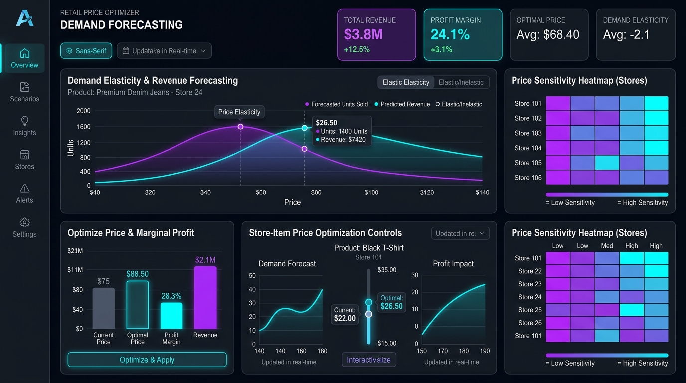
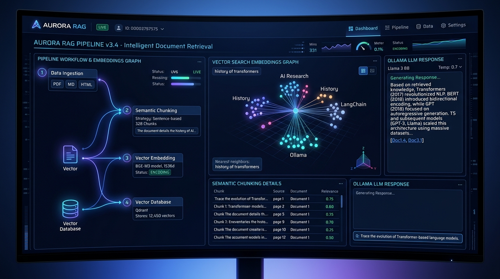
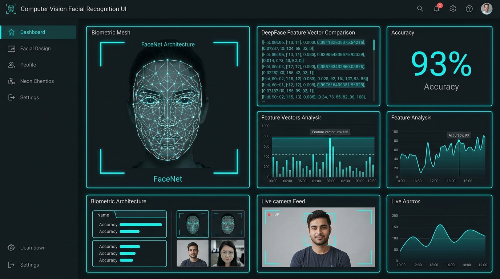
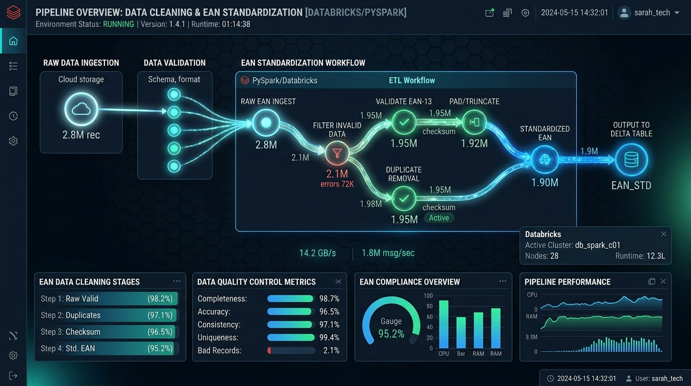
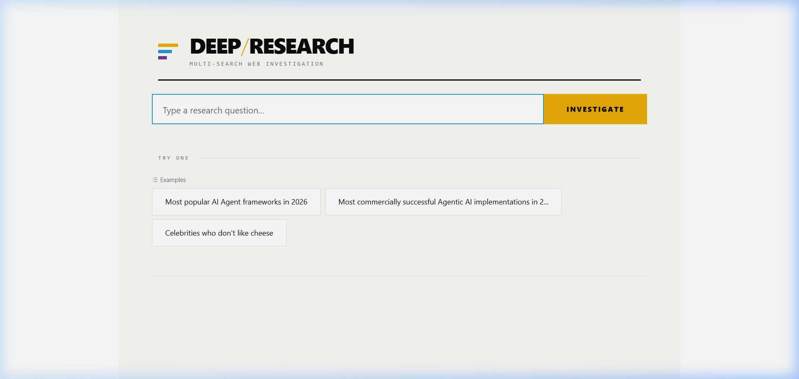

Data Scientist with ~5 years of experience in automation, data modelling, and price optimization. Specialized in deploying revenue forecasting algorithms leveraging price elasticity of demand and delivering 8x–10x model efficiency gains across global FMCG & CPG markets.
Proven track record in building algorithmic pricing solutions, scalable data architectures, and high-impact machine learning systems.
I am a Data Scientist with approx ~5 years of experience across automation, data modelling, inferential statistics, and machine learning package development. I have led impactful initiatives across the CPG, Retail, and Insurance sectors.
My core specialty lies in Price Optimization and Demand Elasticity: formulating mathematical loss-minimization frameworks, managing real-world market constraints, and crafting intuitive simulation tools that empower leadership to make decisive, revenue-maximizing pricing adjustments.
Building store- and item-level pricing engines using price elasticity of demand to forecast revenue and maximize net margin while maintaining market share.
End-to-end industrialization of ML models across US and Brazil markets, reducing execution cycles by 40% and boosting pipeline throughput.
Designing automated data cleaning and quality control pipelines with Databricks, PySpark, and Azure to harmonize multi-retailer EAN datasets.
Hands-on journey driving commercial analytics and AI solutions across industry-leading organizations.
A comprehensive stack spanning statistical modeling, enterprise AI frameworks, and distributed cloud computing.
Production-grade systems delivering business impact through data modeling, optimization, and AI.

Retail Analytics / EconometricsHigh-performance pricing engine computing optimal prices at store- and item-level granularity. Models the price elasticity curve to forecast revenue, maximize net margins, and account for competitive and inventory constraints.

Generative AI / LLMsEnterprise-grade Retrieval-Augmented Generation (RAG) system with semantic chunking, high-density vector search, and localized LLM inference for precise document synthesis without hallucinations.

Computer Vision / BiometricsBiometric authentication solution leveraging FaceNet deep architecture and DeepFace feature extraction for one-shot identity verification and comparison.

Big Data & Cloud EngineeringMulti-tenant data ingestion and quality-control pipeline deployed on Databricks to clean, standardize, and map disparate retailer datasets onto a unified EAN schema.
Self-driven explorations in Generative AI, NLP, and emerging technologies — built, deployed, and open-sourced.

Generative AI / Multi-AgentMulti-agent research application that plans web searches, executes parallel research across sources, synthesizes findings into structured Markdown reports, and delivers results via email — all through an interactive Gradio web interface.
Built a model to identify duplicate questions on Quora using TF-IDF, Word2Vec, Cosine similarity, and Jaccard similarity for feature engineering, improving answer efficiency and reducing redundancy.
Formal degrees in Computer Science and Data Science supplemented with specialized domain credentials.
Comprehensive coursework covering big data architectures, machine learning algorithms, inferential statistics, and distributed compute systems.
Rigorous core training in algorithms, data structures, discrete mathematics, object-oriented programming, and relational database systems.
Deep specialization in retail pricing mechanics, trade promotions, FMCG supply chain dynamics, and elasticity modeling.
Actuarial data modeling, claims loss distributions, customer retention scoring, and regulatory constraint modeling.
Advanced text mining, embedding representations, sequence modeling, and language understanding architectures.
Rigorous foundational deep learning covering CNNs (ResNet, VGG), RNNs/LSTMs, Optimization (Adam, RMSProp), Autoencoders, and Attention Mechanisms.
Advanced data structures, algorithmic complexity optimization, and memory-efficient data representation.
Open for technical leadership, pricing & data science strategy, or machine learning engineering discussions.